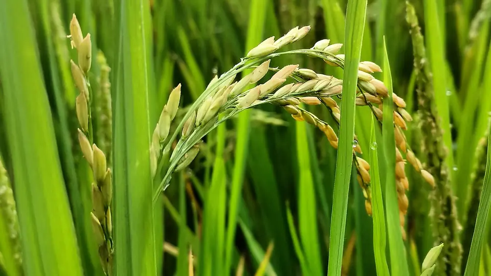

सामान्य धान ₹2,441 और ग्रेड A ₹2,461 प्रति क्विंटल — पर यह रेट सरकारी केंद्र पर, पंजीकरण के बाद, सूखे धान पर ही मिलता है।

इस सीज़न किसान सबसे ज़्यादा एक ही सवाल पूछ रहे हैं: धान का सरकारी रेट कितना है? सीधा जवाब है — खरीफ विपणन वर्ष 2026-27 में सामान्य (कॉमन) धान का न्यूनतम समर्थन मूल्य ₹2,441 प्रति क्विंटल और ग्रेड A धान का ₹2,461 प्रति क्विंटल है। दोनों पिछले साल से ₹72 ज़्यादा हैं।
पर यह रेट अपने-आप नहीं मिलता। यह उस धान का भाव है जो सरकारी खरीद केंद्र पर, पंजीकरण के बाद, और नमी व गुणवत्ता की शर्त पूरी करके बिकता है। इस लेख में पूरा हिसाब एक जगह है: 1 किलो से 100 क्विंटल तक कितना पैसा बनता है, 2018 से अब तक रेट कैसे बढ़ा, ग्रेड A क्या होता है, किस राज्य में पंजीकरण कहाँ होता है, और कौन-से राज्य MSP के ऊपर अपनी तरफ़ से पैसा देते हैं।
केंद्रीय मंत्रिमंडल की आर्थिक मामलों की समिति (CCEA) ने 13 मई 2026 को 14 खरीफ फसलों का नया MSP मंज़ूर किया। धान का रेट इस तरह है:
| श्रेणी | MSP 2026-27 | MSP 2025-26 | बढ़ोतरी |
|---|---|---|---|
| धान — सामान्य (कॉमन) | ₹2,441 / क्विंटल | ₹2,369 | +₹72 |
| धान — ग्रेड A | ₹2,461 / क्विंटल | ₹2,389 | +₹72 |
सरकार के अनुसार यह रेट 2018-19 के बजट में तय उस नियम पर बना है कि MSP पूरे देश की औसत उत्पादन लागत का कम से कम डेढ़ गुना हो। यही एक रेट पूरे देश में लागू होता है — उत्तर प्रदेश, पंजाब, छत्तीसगढ़ या बिहार, हर जगह केंद्र का MSP एक ही है। फ़र्क सिर्फ़ तब आता है जब कोई राज्य अपनी तरफ़ से बोनस जोड़ता है (नीचे अलग से दिया है)।
एक क्विंटल = 100 किलो। गाँव में कई जगह भाव मन (40 किलो) में भी पूछा जाता है, इसलिए वह भी दिया है।
| मात्रा | सामान्य धान (₹2,441) | ग्रेड A धान (₹2,461) |
|---|---|---|
| 1 किलो | ₹24.41 | ₹24.61 |
| 1 मन (40 किलो) | ₹976.40 | ₹984.40 |
| 1 क्विंटल | ₹2,441 | ₹2,461 |
| 10 क्विंटल | ₹24,410 | ₹24,610 |
| 25 क्विंटल | ₹61,025 | ₹61,525 |
| 50 क्विंटल | ₹1,22,050 | ₹1,23,050 |
| 100 क्विंटल | ₹2,44,100 | ₹2,46,100 |
पिछले साल के मुक़ाबले बढ़ोतरी हर क्विंटल पर ₹72 है — यानी 50 क्विंटल पर ₹3,600 और 100 क्विंटल पर ₹7,200 ज़्यादा।
दोनों में सिर्फ़ ₹20 प्रति क्विंटल का फ़र्क है, और पिछले चार साल से यही फ़र्क चल रहा है। श्रेणी दाने की बनावट से तय होती है — आमतौर पर पतला-लंबा दाना (लंबाई और चौड़ाई का अनुपात 2.5 या उससे ज़्यादा) ग्रेड A में गिना जाता है, और मोटा दाना सामान्य में।
| बिंदु | सामान्य (कॉमन) | ग्रेड A |
|---|---|---|
| MSP 2026-27 | ₹2,441 | ₹2,461 |
| दाना | मोटा या मध्यम | पतला और लंबा |
| श्रेणी कौन तय करता है | खरीद केंद्र पर खरीद करने वाला कर्मचारी, किस्म और दाना देखकर | |
| गुणवत्ता की शर्तें | दोनों पर एक जैसी — नमी 17%, अपद्रव्य 1%-1%, क्षतिग्रस्त दाने 5% | |
सामान्य धान का MSP 2018-19 में ₹1,750 था। आठ साल में यह ₹691 बढ़कर ₹2,441 हो गया है — लगभग 39% की बढ़ोतरी।
| खरीफ विपणन वर्ष | सामान्य धान (₹/क्विंटल) | पिछले साल से |
|---|---|---|
| 2018-19 | ₹1,750 | — |
| 2019-20 | ₹1,815 | +₹65 |
| 2020-21 | ₹1,868 | +₹53 |
| 2021-22 | ₹1,940 | +₹72 |
| 2022-23 | ₹2,040 | +₹100 |
| 2023-24 | ₹2,183 | +₹143 |
| 2024-25 | ₹2,300 | +₹117 |
| 2025-26 | ₹2,369 | +₹69 |
| 2026-27 | ₹2,441 | +₹72 |
ग्रेड A धान का MSP 2023-24 में ₹2,203, 2024-25 में ₹2,320 और 2025-26 में ₹2,389 था — हर साल सामान्य धान से ठीक ₹20 ऊपर।
MSP वह भाव है जिस पर सरकारी एजेंसियाँ धान खरीदती हैं। इसके लिए तीन शर्तें हैं:
मंडी में निजी व्यापारी का भाव खुली बोली से तय होता है — वह MSP से ऊपर भी हो सकता है और नीचे भी। आज किस मंडी में कितना भाव चल रहा है, यह धान का आज का मंडी भाव पर देखा जा सकता है।
MSP पूरे देश में एक है, पर पंजीकरण का पोर्टल और खरीद की तारीख़ हर राज्य अपनी तय करता है। हर राज्य की पूरी प्रक्रिया उसके अलग लेख में है:
| राज्य | पंजीकरण कहाँ | 2026-27 की स्थिति |
|---|---|---|
| उत्तर प्रदेश | fcs.up.gov.in या UP Kisan Mitra ऐप | पश्चिमी UP में 1 अक्टूबर से, पूर्वी UP में 1 नवंबर से (हर साल की क्रय नीति से तय) |
| मध्य प्रदेश | ई-उपार्जन (mpeuparjan.nic.in) | पंजीयन 15 सितंबर से 10 अक्टूबर 2026 तक |
| हरियाणा | मेरी फसल मेरा ब्यौरा (fasal.haryana.gov.in) | मंडियों में तुलाई 24 सितंबर 2026 से |
| पंजाब | अनाज खरीद पोर्टल (anaajkharid.in) | सरकारी खरीद 1 अक्टूबर 2026 से |
| छत्तीसगढ़ | एग्री स्टैक पंजीयन + समिति | एग्री स्टैक पंजीयन 31 अक्टूबर 2026 तक ज़रूरी |
| बिहार | कृषि विभाग किसान निबंधन, फिर सहकारिता विभाग पर आवेदन | पैक्स / व्यापार मंडल पर बिक्री |
कुछ राज्य केंद्र के MSP के ऊपर अपनी तरफ़ से बोनस या "आदान सहायता" देते हैं। इसीलिए कई किसान "धान का रेट ₹3,100" सुनते हैं — वह MSP नहीं, MSP और राज्य की सहायता का जोड़ है।
| राज्य | योजना | क्या मिलता है |
|---|---|---|
| छत्तीसगढ़ | कृषक उन्नति योजना | पिछले सीज़न (2025-26) MSP और आदान सहायता मिलाकर कुल ₹3,100 प्रति क्विंटल। 2026-27 की दर अभी घोषित होनी है। |
| ओडिशा | समृद्ध कृषक योजना | MSP के ऊपर राज्य की इनपुट सहायता, कुल ₹3,100 प्रति क्विंटल तक |
| तेलंगाना | पतले धान पर बोनस | खरीफ 2024 से पतली (सन्ना) किस्मों पर ₹500 प्रति क्विंटल बोनस |
बासमती धान MSP पर नहीं खरीदा जाता। सरकारी खरीद का धान राशन (PDS) के चावल में जाता है, और बासमती उस व्यवस्था में नहीं है। बासमती मंडी में खुली बोली पर निजी व्यापारी और निर्यातक खरीदते हैं — इसलिए 1509, 1121, 1718 या 1692 का भाव रोज़ बदलता है और किस्म के हिसाब से अलग होता है।
किस बासमती किस्म में क्या फ़र्क है और मंडी का भाव कहाँ देखें, यह 1509, 1692, 1718 और 1121 धान — बासमती किस्मों का पूरा फ़र्क में है। आज का भाव बासमती धान का मंडी भाव पर।
2026-27 में धान का सरकारी रेट सामान्य ₹2,441 और ग्रेड A ₹2,461 प्रति क्विंटल है — पूरे देश में एक। यह रेट सरकारी केंद्र पर, पंजीकरण के बाद, सूखे और साफ़ धान पर मिलता है। कुछ राज्य इसके ऊपर अपना बोनस जोड़ते हैं, और बासमती इस व्यवस्था से बाहर है।
अपने राज्य का लेख खोलकर पंजीकरण की स्थिति देख लीजिए, और बेचने से पहले मंडी का आज का भाव भी देखिए — फ़ैसला आपका है।
मंडी भाव, सरकारी योजनाएं, बीज-खाद की जानकारी और फसल रोग उपचार — सब कुछ हिंदी में।
KrashiMitra.in पर जाएं →धान का भावबासमती धान का भावचावल का भावगेहूं का भावसभी फसलों के भाव →
📲 यह लेख WhatsApp पर भेजें